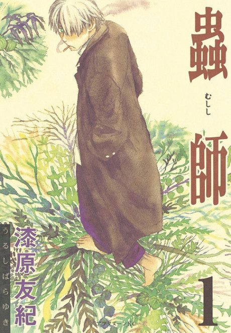

Animeter
← Rankings Anime
Anime
Manga2005 · Adventure, Fantasy, Mystery
Mushishi
蟲師
AniList8.4
Animeter—
Season 126 ep
MangaAdapted
Key events
These are spoilers. They stay blurred until you reveal them, one at a time or all at once.
Mushi-Shi (Series 1) Ep 1–26
- The Green Seat (ep 1): Ginko meets Shinra, a boy whose drawings come to life, and the mushi that keeps him company.
- One-Eyed Fish (ep 12): Ginko's origin is revealed, including how he lost an eye and his memories to a mushi of darkness.
- A Sea of Writings (ep 20): Ginko visits Tanyuu, whose family seals mushi away in writing across generations.
- The Sound of Footsteps on the Grass (ep 26): a look back at Ginko's youth traveling the mountains.
The Shadow That Devours the Sun Film
- Ginko works with a girl who cannot go out in sunlight as an eclipse approaches.
- Ginko stops the shadow mushi from returning during the eclipse.
Next Passage (Part 1) Ep 27–36
- Banquet at the Forest's Edge (ep 27): a sake brewer's son stumbles into a strange mushi ceremony and meets Ginko.
- The Warbling Sea Shell (ep 28): a girl isolated on a sea crag hears a shell's warning of disaster.
- Depths of Winter (ep 36): Ginko is trapped on a mountain locked in an endless winter.
Path of Thorns Film
- Ginko investigates a dangerous mushi and meets Kumado, a girl tied to the family's mushi-sealing work.
- Ginko confronts a soul-devouring mushi living inside her.
Next Passage (Part 2) Ep 37–46
- Lingering Crimson (ep 39): a girl vanishes at dusk and a memory-less girl appears in her place.
- Lightning's End (ep 44): a boy who draws lightning strains his mother's feelings for him.
- Tree of Eternity (ep 46): a man carries memories of lives before his own birth.
Bell Droplets Film
- The girl is chosen as the mountain's lord, a role normally held by a mushi or animal.
- Ginko risks himself to offer her a chance to become human again, and the series closes with her fate settled.